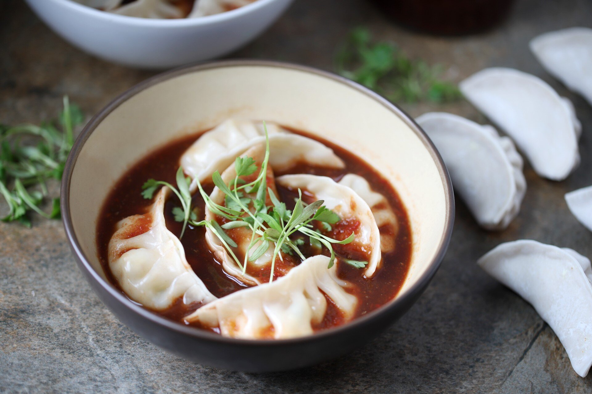

Paneer MO:MO:

What is MO:MO;
MO:MO: are bite-size dumplings made with a spoonful of stuffing wrapped in dough. MO:MO: are usually steamed though they are somethimes fried or steam-fried. Meat or vegetables filling becomes succulent as it produces an intensively flavor broth sealed inside the wrappers.
Ingredients
- Paneer
- Butter
- Cabbage
- Carrot
- Dry Onions
- Ginger and Garlic(paste)
- Coriander (Chopped)
- Cumin Powder
- Salt
- Garam Masala
- MO:MO: Masala
Cooking Method
- Firstly, grate the paneer.
- Chop and boil the Cabbage and carrot.
- Chop, dry and spring Onionsand keep them seperately.
- Mix the Paneer, Cabbage, Onions and Coriander.
- Prepare dough of Refined Wheat Flour and make small lumps.
- Put mixture in it, and make dumplings in the shape as you like.
- It can be steamed or Fried and once it becomes ready serve with Tomato Pickle.
Some Popular Recipe: